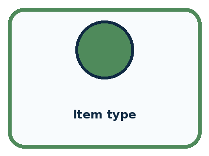
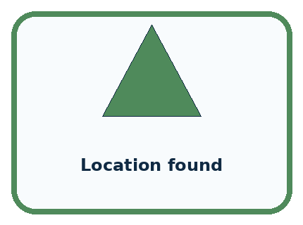
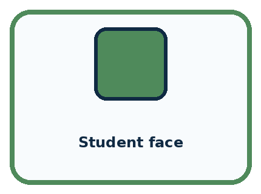
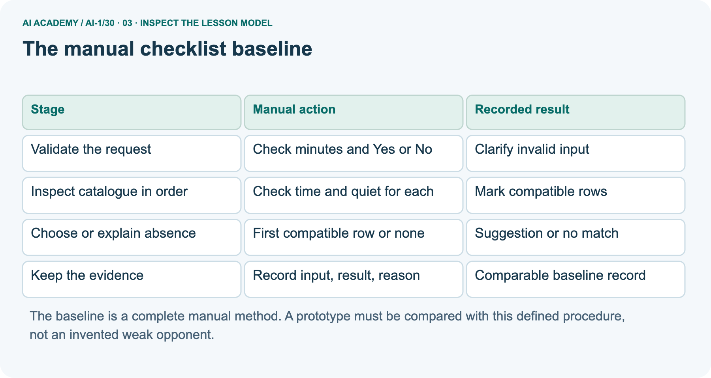
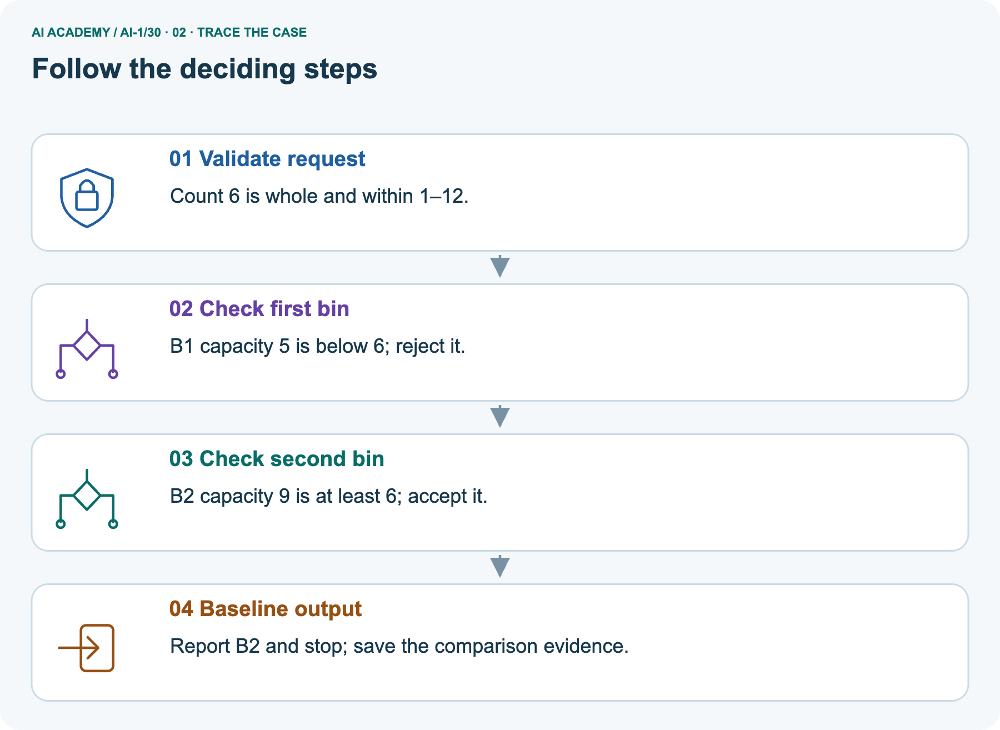
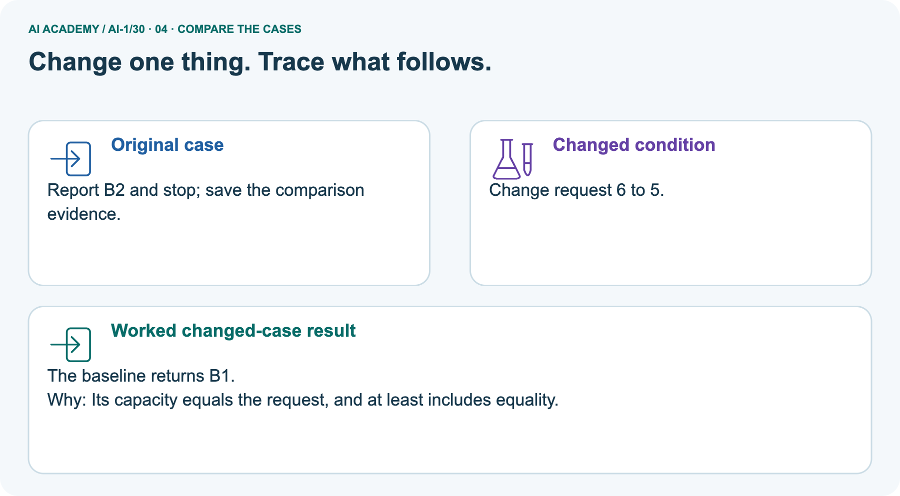
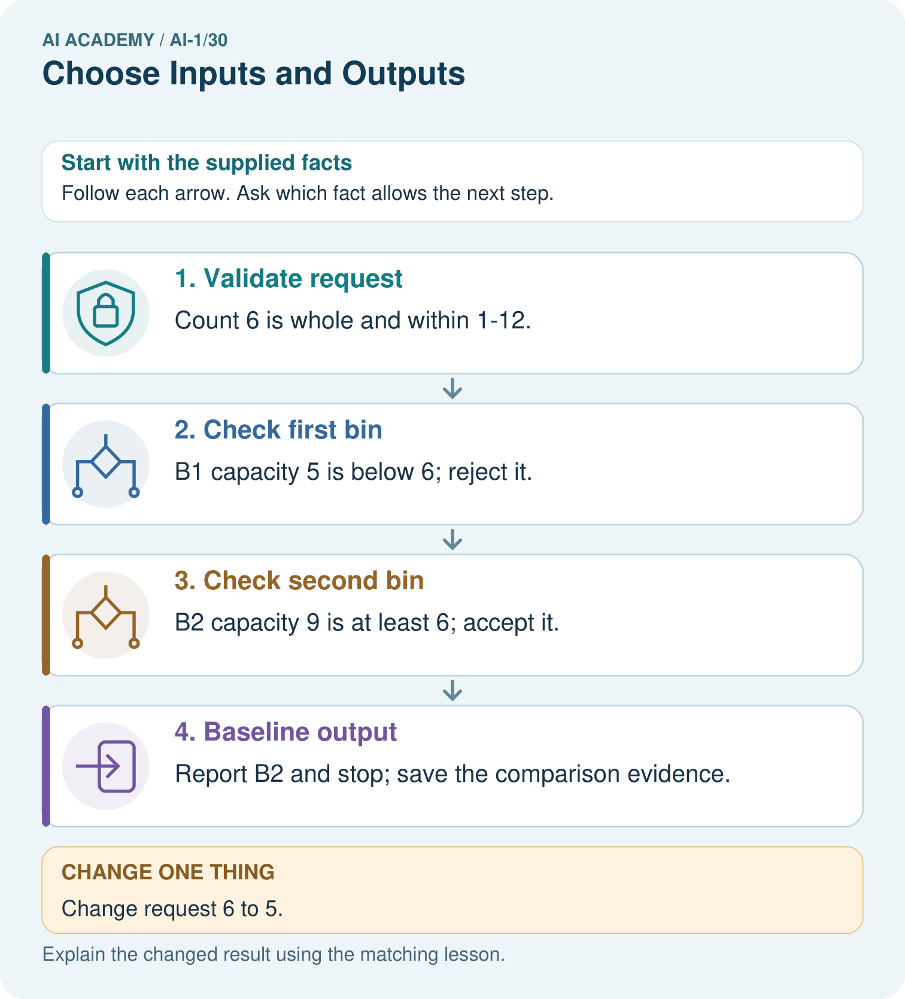
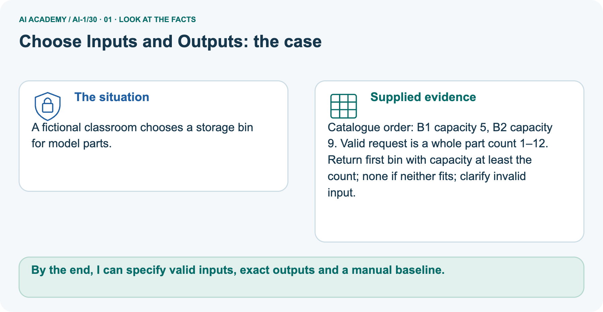
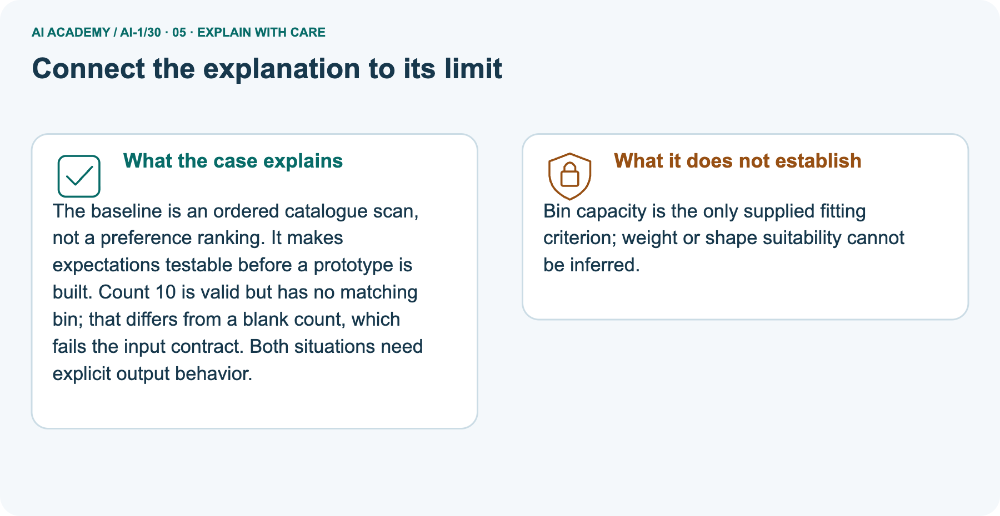
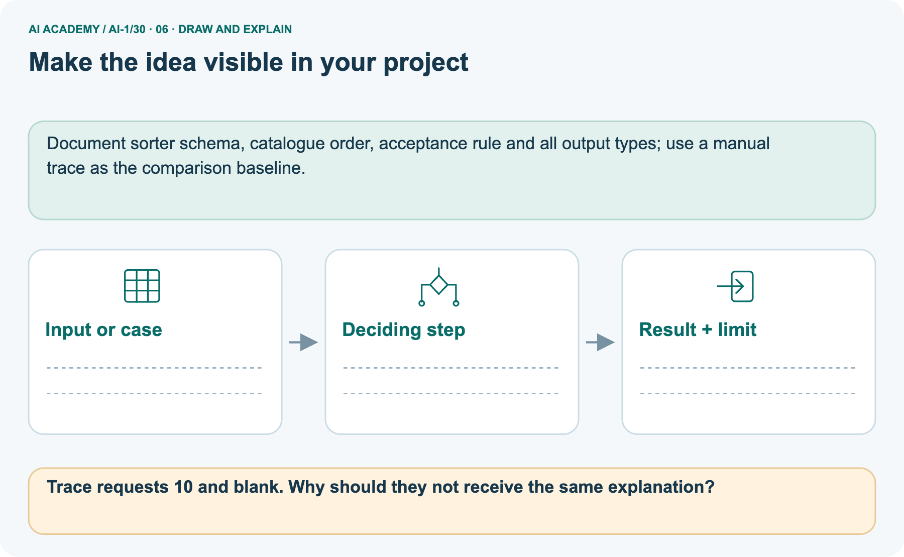

AI Academy · Level 1 · Grade 6 · Week 30 · Student lesson
Choose Inputs and Outputs
Learn to understand, design, build, test and explain AI systems responsibly.
Project: Helpful Classroom Sorter
THE CONNECTED WEEK
Specify inputs. Trace the baseline. Compare under one contract.
Continue the activity project with a complete catalogue, explicit fitting rules and distinct no-match and clarification paths.
Keep one habit: Validate → check every condition → choose in order → keep the evidence.
Main lesson · Section 1
What exactly must go in—and come out?
Turn the observed need into a repeatable input/output contract.
Start with an agreement test
Two people should be able to read the same request and agree on the required result. Specify valid inputs, every condition, the tie rule and the difference between invalid input and a genuine no match.
Recall why zero wrong suggestions is insufficient
A recommender always reports no match. Why is a count of zero incompatible suggestions insufficient to show that it helps users?
Close your notes first. A rough first answer helps us choose the right starting point; it is not a score for your ability.
After trying, check the relevant lesson or ask your teacher. Change the part of your explanation that the evidence shows was wrong.
Your learning goals
I can turn the project outcome into precise input and output requirements.
I can apply a simple manual baseline to valid requests and record its results.
I can plan a fair comparison using the same catalogue, requests and judging rules.
Earlier wording, alternatives and picture transcripts
Your learning target
Remember before reading
Without opening the old lesson, explain one key idea from Find a Real Problem. Give an example and a mistake that the idea helps you avoid.
Without opening the old lesson, explain one key idea from Verify Important Outputs. Give an example and a mistake that the idea helps you avoid.
Without opening the old lesson, explain one key idea from Privacy by Choosing Less. Give an example and a mistake that the idea helps you avoid.
A useful design makes required information and promised result explicit.

LEARNING TARGET Design a paper/plastic sorter that receives an object description. Include a mixed paper-and-plastic cup. Specify inputs, outputs and the uncertain-case action. Is the owner's name useful?
Learner name:
Readiness for the connected explanation
This week’s end goal
By the end, I can specify valid inputs, exact outputs and a manual baseline.
Main lesson · Section 2
Specify the activity recommender’s contract
Continue the fictional activity project from Week 29.
Turn a vague outcome into requirements
Last week we identified a difficulty: some fictional activity choices did not fit the available time or room conditions. Now define the task precisely enough that two reviewers can agree whether an output is correct.
A requirement such as “suggest a good activity” is too vague. State which inputs are accepted, what counts as compatible and what to do when no option fits.
Define valid minutes and the quiet requirement
For this paper project, a valid request contains an available time from 0 to 30 whole minutes and a quiet-room requirement written Yes or No. Yes means the activity must be marked quiet.
No means either quiet or non-quiet activities are permitted; it does not mean noise is required. A missing or invalid value needs clarification, not a guessed value or a no-match claim.
Define compatibility, order and output limits
A compatible activity takes no more than the available minutes and meets the quiet-room condition. If several activities fit, suggest the first in catalogue order. If none fits a valid request, report no match.
Give a brief reason. This is a suggestion only: it does not book resources, tell anyone to begin or guarantee enjoyment.
Earlier wording, alternatives and picture transcripts
PICTURE STORY
Look Closely Before You Explain
Pictures give clues; evidence tells us what the clues mean.

MYSTERY A sorter can use item type and location found to suggest a bin without collecting a student's name or face.
What do you notice?
Name three visible details without explaining them yet.
Circle the detail most connected to the system's decision.
Name one detail that may be decoration or distraction.
Make a first prediction and state the clue that supports it.
My observations, prediction, and evidence:
GOOD THINKING A prediction can change when stronger evidence appears.
A closer explanation
Main lesson · Section 3
Read the complete approved activity catalogue
These B1–B4 activity codes belong to this catalogue, not the later storage-bin example.
The four-row activity catalogue
| Catalogue order and activity | Minutes required | Quiet activity |
|---|---|---|
| B1 Bookmark drawing | 10 | Yes |
| B2 Story circle | 8 | No |
| B3 Pattern puzzle | 12 | Yes |
| B4 Tower challenge | 15 | No |
State the paper model and tie rule
These four rows are the complete approved catalogue for the paper model. Treat their times as fixed task values, not measured guarantees about real pupils. All required materials are assumed available.
The catalogue order B1, B2, B3, B4 is the tie rule; it is not a claim that B1 is everyone’s favourite.
Trace three valid requests
For 10 minutes with quiet required, B1 fits because 10 is no more than 10 and B1 is quiet. B2 fails the quiet requirement. B3 and B4 take too long. For 8 minutes with quiet not required, B2 fits; B1 takes too long.
A request for 7 minutes has no compatible activity in this catalogue, even when quiet is not required.
Check equality, both conditions and missing values
Check each condition. A fast activity can still fail the quiet requirement. A quiet activity can still take too long. Exact equality is allowed: an activity listed as 10 minutes fits 10 available minutes.
A blank time is different from a valid time of zero.
Point to the input, the deciding step and the result in this week’s visual. Explain the same step in ordinary words. A picture helps when you can say what each part represents.
Earlier wording, alternatives and picture transcripts
VISUAL MECHANISM
Input → Process → Output
Follow the information instead of imagining magic inside the machine.


INPUT minimal required information
PROCESS candidate decision process
OUTPUT specific promised result and uncertainty path
CORE IDEA A useful design makes required information and promised result explicit.
UNDER THE HOOD Interface contracts define inputs, outputs, types, allowed values, missing-data behavior, and guarantees.
Good design avoids collecting data that cannot improve the promised result and avoids promising outcomes the process cannot support.
Draw a fresh example with all three stages:
A closer explanation
Connect the picture and the explanation
Main lesson · Section 4
Compare useful fields with unsupported promises
Collect only inputs that support the actual output contract.
Pictures paired with their evidence


The case to investigate
CASE 1 — Item type Clue: directly supports bin choice. Meaning: required candidate.


The case to investigate
CASE 2 — Location found Clue: may disambiguate. Meaning: optional candidate.


The case to investigate
CASE 3 — Student face Clue: not needed. Meaning: remove.

Discuss the confusing pair
Which two pictures are easiest to confuse? What evidence separates them?
Keep the limit in view
BOUNDARY Every collected field creates cost and risk; every promised output needs evidence.
Earlier wording, alternatives and picture transcripts
PICTURE GALLERY
Four Cases, Four Clues
Use the visual cue, then read the evidence carefully.
CASE 1 — Item type Clue: directly supports bin choice. Meaning: required candidate.
CASE 2 — Location found Clue: may disambiguate. Meaning: optional candidate.
CASE 3 — Student face Clue: not needed. Meaning: remove.
CASE 4 — Guaranteed owner Clue: unsupported promise. Meaning: revise output.
Change one thing in the pictured case
Change: Change request 6 to 5.
Prediction: The baseline returns B1.
Reason: Its capacity equals the request, and at least includes equality.
Main lesson · Section 6
Trace the separate two-bin baseline
Here B1 and B2 are bins with capacities 5 and 9, not the activity catalogue’s codes.
Read the bin catalogue and input contract
A fictional classroom chooses a storage bin for model parts.
Catalogue order: B1 capacity 5, B2 capacity 9. Valid request is a whole part count 1–12.
Return first bin with capacity at least the count; none if neither fits; clarify invalid input.
Return to the activity baseline’s four-stage checklist



Trace the six-part bin request



Read the picture one step at a time
Distinguish valid no-match from invalid input
The baseline is an ordered catalogue scan, not a preference ranking. It makes expectations testable before a prototype is built.
Count 10 is valid but has no matching bin; that differs from a blank count, which fails the input contract. Both situations need explicit output behavior.
Read the labelled picture: Trace requests 10 and blank. Why should they not receive the same explanation?
Predict the five-part boundary
Before opening the changed-count picture, change the storage-bin request from 6 parts to 5. Which first bin has enough capacity? Explain why equality is accepted and why the activity catalogue must not be used for this separate example.
Check the changed request



Limit the promised fitting criterion
Bin capacity is the only supplied fitting criterion; weight or shape suitability cannot be inferred.
Earlier wording, alternatives and picture transcripts
WORKED EXAMPLE
Watch the Reasoning, Not Just the Answer
Every step connects a claim to observable evidence.

CASE A sorter can use item type and location found to suggest a bin without collecting a student's name or face.
STEP 1 — OBSERVE minimal required information
STEP 2 — TRACE candidate decision process
STEP 3 — CONCLUDE specific promised result and uncertainty path
MODEL REASONING Prefer the design that meets the measurable need with fewer, clearer inputs and an honest output. State how missing values and ambiguous cases are handled before building.
DO NOT OVERCLAIM Every collected field creates cost and risk; every promised output needs evidence.
What new evidence could change this answer?
A closer explanation
The manual checklist baseline
Write the request at the top of a sheet. If it is invalid, record what needs clarification and stop. Otherwise mark each catalogue row as compatible or incompatible using both conditions.
Circle the first compatible row in order, or write no match if every row fails. Record the output and its reason. This checklist is our baseline.
The baseline can be correct on all cases when applied carefully. A prototype that matches it has not demonstrated better compatibility.
It may still be easier to use or faster to trace, but those are separate claims that need their own measures. Do not make the baseline skip a condition just to make the prototype look better.
Learn from the worked case
Cover the result before checking it. Say what is given, choose the procedure, and follow one step at a time. Then uncover the result and explain your first mismatch. Ask why a step is allowed, not only what number it produces.
A pictorial worked case: Choose Inputs and Outputs
The facts we will use



Why this result follows
What this example does not establish
Change one thing: Change request 6 to 5. Predict the result before checking the explanation. What remains the same?
Main lesson · Section 7
Keep a repeatable baseline record
Record the actual input, output, reason, catalogue and method version.
Build the project evidence record
Your project record now needs the problem brief, this catalogue, the input rules, compatibility rule, tie rule and clarification behaviour.
Add a baseline sheet with one row per request: supplied input, actual output, reason and whether the requirements were met. Record the method and catalogue version so a later reader can repeat the comparison.
Keep this week’s baseline separate from next week’s process design
For this week, complete the baseline before building a new process. Next week you will design the full decision path, including invalid input and no-match cases. Keep compatibility claims within the paper model.
Real materials, changing room conditions and pupils’ preferences would require more information and a revised task.
Repair both tempting claims
CLAIM A More inputs make every design more accurate.
CLAIM B An output label can promise more than the process actually knows.
STRONG ANSWER FRAME I claim ______ because the evidence shows ______. The process is ______. One limit is ______.
Earlier wording, alternatives and picture transcripts
COMPARE
Same Result, Different Reason
A comparison helps reveal the true concept boundary.
| Case | Evidence | What it shows |
|---|---|---|
| Item type | directly supports bin choice | required candidate |
| Location found | may disambiguate | optional candidate |
| Student face | not needed | remove |
| Guaranteed owner | unsupported promise | revise output |
Repair two tempting claims
Repair:
Repair:
A closer explanation
Main lesson · Section 8
Practise: compare methods under the same contract
Keep development cases separate from reserved final evaluation.
Use the same inputs, catalogue and acceptance rules
Both methods must receive the same request values and the same catalogue version, and both must be judged by the same requirements. Record actual results, including errors, no-match outputs and clarification requests.
A valid no-match result can pass; a no-match result that overlooks a fitting activity cannot. A guessed answer to invalid input fails the clarification requirement.
Protect the final set and document requirement changes
The cases used while designing are development cases. Keep the teacher’s reserved final cases unopened until the process is fixed and ready for evaluation.
Do not change the requirements after seeing a poor result simply to count that result as a success. If a real need changes, record the new requirement and rerun the relevant checks.
Run the activity baseline in W2
Use workbook W2 for the connected example “Requirements and a simple baseline”. First fill the input and rule boxes. Try the middle steps before asking for a hint. After a hint, try the next step yourself.
| Plan | Do | Check |
|---|---|---|
| What is given? Which rule or procedure applies? | Record each intermediate step. | Does the result follow? What remains unknown? |
Explain your trace to a partner. Your partner points to one step to check. Swap roles on the next case. Each person writes their own explanation.
Repair the meaning of Quiet required No
Use the worked case for Requirements and a simple baseline. Proposed explanation: “Quiet required No excludes quiet activities”. Decide whether this explanation is supported.
Point to the step or supplied fact that decides; explain your repair if needed.
Answer on your own before discussion. If you are unsure, say which step you need help with.
Return to bin requests 10 and blank
Trace requests 10 and blank. Why should they not receive the same explanation?
This is supported practice. Keep the separately named independent case for an attempt before feedback.
Earlier wording, alternatives and picture transcripts
GUIDED PRACTICE
Try It, Check It, Explain It
Use support now so you can succeed independently later.

Explain how the picture story demonstrates this idea: A useful design makes required information and promised result explicit.
Use a fresh example to explain required input.
Trace a new input → process → output example.
Find and repair the error in: An output label can promise more than the process actually knows.
Invent one edge case and name the safe response.
PARTNER CHECK Point to the evidence. Do not accept an answer that only repeats the vocabulary word.
A closer explanation
Practise with less help: Run the baseline on three requests
Check your reasoning
Explain the picture
Main lesson · Section 9
Investigate two input designs on identical requests
Supply the same catalogue and contract to both designs.
The two fictional designs
Paper two-design audit using the approved B1–B4 activity catalogue: Design A asks for available whole minutes 0–30, Quiet required Yes/No and pupil name. Design B asks only for the same minutes and quiet requirement. Both promise the first compatible catalogue activity, no match for a valid request with no fit, and clarification for invalid input. No real names or pupil data are needed.
Predict, trace and remove the unnecessary field
Predict whether removing the name changes any compatibility decision. Trace both designs on the same fictional cases: (12,No), (8,Yes), (blank,Yes) and (0,Yes). Show each activity’s time and quiet checks, actual output and reason. Remove the unnecessary input and explain why identical correct outputs do not establish that the redesigned process is faster or easier to use. Label these paper traces, not live AI tests.
Keep a normal case and an edge case clearly separated.
Record what happened—even when it does not match your prediction.
Explain the result, one limitation, and the next useful test.
Keep all outputs and bounded conclusions
| Case | Prediction | Observed result | What it means |
|---|---|---|---|
| Normal | |||
| Edge |
Before trying: what do I expect, and why? While trying: which step could first go wrong? Afterwards: what did I actually observe, and what should change? Keep “not run” if you only traced the procedure.
Earlier wording, alternatives and picture transcripts
EXPLORER LAB
Two-Design Input Audit
Predict first, test honestly, and explain what the evidence means.

State your prediction before the result is known.
Complete the task: Sketch two designs and remove an unnecessary input.
INDEPENDENCE After support is removed, repeat the proof with a fresh case.
Plan → try → check
Main lesson · Section 14
Try alone: build the different room baseline
Use R1/R2 and the room-capacity rule before feedback.
The independent room catalogue and requests
A paper room recommender uses R1 first, capacity 6, quiet Yes; then R2, capacity 10, quiet No. Valid requests give a whole group size from 1 to 12 and Quiet required Yes or No.
A room fits when capacity is at least group size and the quiet condition is met; choose the first fitting room. Record outputs and reasons for 6 people Yes, 8 people No and 8 people Yes.
Explain how a manual baseline can be compared fairly with a prototype. No real booking is allowed.
Keep your first attempt
Attempt this case before feedback. Record any help. Earlier examples below are further practice; a case already practised with feedback cannot establish fresh transfer.
Your teacher has the independent answer and scoring criteria. Complete the matching workbook week to keep your practice evidence together.
Use feedback afterwards
Attempt the independent case before hints. Record whether you worked alone, used a hint or followed a model. After feedback, fix the first unsupported step and explain why it changed.
A later check uses a changed case, not a copied answer.
Earlier wording, alternatives and picture transcripts
Independent case: Build a baseline for a different catalogue
Week 30 Independent application
Close the worked explanation. Apply the idea to this different question without copying.
A paper sorter must suggest pencil tray or book shelf. Choose one needed input and state the output. What should happen if the picture is blocked?
My answer, with a trace, calculation or supporting evidence
Create and test
Change one relevant detail. Predict the result before testing. Include a boundary or missing-information case when it helps reveal a limit.
My changed input and expected result
Connect to your project
Freeze the sorter's v1 input list, output contract, and not-sure behavior.
The evidence I will keep
Transfer practice from the original programme
Design a paper/plastic sorter that receives an object description. Include a mixed paper-and-plastic cup. Specify inputs, outputs and the uncertain-case action. Is the owner's name useful?
Use feedback to improve
Main lesson · Section 11
Transfer the contract method to the sorter portfolio
Keep the activity project and sorter evidence distinct.
How the two contexts relate
The main final sequence continues the paper activity recommender. This section transfers its input/output-contract method to the existing sorter portfolio; it does not require a second build. Keep each catalogue and its codes labelled. The activity baseline remains the comparison method for the connected sequence.
This week’s sorter contract
THIS WEEK'S CHECKPOINT Freeze the sorter's v1 input list, output contract, and not-sure behavior.
Document sorter schema, catalogue order, acceptance rule and all output types; use a manual trace as the comparison baseline.
Inspect fields, outputs and uncertainty
What real classroom need does this serve?
What information is necessary—and what should stay private?
What happens inside the process?
What normal and edge cases will you test?
When should it say not sure or ask a person?
Limit inputs and promises to the task
RESPONSIBLE DESIGN Every collected field creates cost and risk; every promised output needs evidence.
Earlier wording, alternatives and picture transcripts
PROJECT
Helpful Classroom Sorter
Build one coherent system across the year, one evidence-based decision at a time.


My project decision:
Evidence for your project
Main lesson · Section 16
Finish: state the contract and its uncertainty paths
Close your notes and distinguish clarification from no match.
Your exit explanation
Close your notes. Explain this goal in your own words: Turn the project outcome into precise input and output requirements
Choose a changed-case check
If you are unsure, return to the worked picture and explain one arrow. If you are ready, change an input or assumption and justify your prediction.
Save your workbook evidence. At the next review, try a different case before opening your old answer.
Reference bank and extra practice
Choose the reference that helps your next step.
Your quick word guide
Reference · Section 5
Your quick word guide
Use the words to explain a particular step, record or limit.
Core vocabulary
| Word | Meaning | My example |
|---|---|---|
| required input | information necessary for the process | |
| optional input | information that may help but is not required | |
| output contract | specific result the system promises to produce | |
| missing-data behavior | what happens when an input is absent |
Terms for the connected explanation
| Word | Meaning |
|---|---|
| Requirement | A precise condition that the solution must satisfy |
| Baseline | A defined starting method used for comparison |
| Compatible | Meeting all the stated conditions of the request |
| Tie rule | A stated way to choose when several options qualify |
| Acceptance check | A check of whether a result satisfies a requirement |
Repair a claim using a word
CLAIM TO REPAIR More inputs make every design more accurate.
Use one vocabulary word and one piece of evidence to repair it:
Earlier wording, alternatives and picture transcripts
VOCABULARY
Words You Can See and Use
The badge is a memory cue; the definition does the real thinking work.


Misconception detective
WORD POWER A strong definition helps you decide something in a new case.
Words used in the closer explanation
Choose a stronger thinking challenge
Reference · Section 10
Choose a stronger thinking challenge
Choose the next useful challenge rather than treating the whole ladder as compulsory.
Pick your next step
RECALL Define required input.
EXPLAIN A useful design makes required information and promised result explicit.
TRACE Show the input, process, and output.
DIAGNOSE Repair: More inputs make every design more accurate.
TRANSFER Apply the idea to a new home or classroom case.
CREATE Design one revealing test.
DEFEND Give a claim, evidence, mechanism, limit, and safe action.
Earlier wording, alternatives and picture transcripts
PRACTICE LADDER
Climb from Recall to Defense
Each step asks for a stronger kind of understanding.

RETRY RULE A coached answer becomes mastery only after you solve a different case independently.
Reference: check your explanation
Reference · Section 12
Reference: check your explanation
Use after practice. Build a baseline for a different catalogue is the selected independent case.
Check the evidence and its limit
□ Name or draw the fresh case.
□ Trace input, process, and output.
□ State the conclusion and strongest evidence.
□ Name one limit, failure, missing clue, or fairness/privacy concern.
□ Explain one safe next action or improvement.
Record support
My level: □ Not yet □ With one hint □ Independently □ I can teach it
Earlier wording, alternatives and picture transcripts
MASTERY
Checklist for explaining this week’s idea
Use after practice. Build a baseline for a different catalogue is the selected independent case.

EXPLANATION CHECK Validate inputs, apply every fitting condition and the stated order, and record actual results under a shared comparison contract.
Independent evidence:
SELF-CHECK Prefer the design that meets the measurable need with fewer, clearer inputs and an honest output. State how missing values and ambiguous cases are handled before building.
NEXT BRIDGE Carry today's evidence habit into: Design the Decision Process.
Extra practice: Design a sorter with only relevant inputs
Reference · Section 13
Extra practice: Design a sorter with only relevant inputs
Try the question before opening its worked explanation.
Read the supplied case and question
A sorter suggests paper or plastic trays using material observations.
Name an input, output and unnecessary input.
Your explanation
Which detail supports the answer, and why does it matter?
Check after trying
Input: material or a suitable image. Output: tray suggestion. Home address is unnecessary. Uncertain material needs review.
| Evidence or stage | Value or result |
|---|---|
| Input | Material or a suitable image |
| Decision | Paper, plastic or uncertain |
| Output | Tray suggestion |
| Review | Ask a person when material is unclear |
Earlier wording, alternatives and picture transcripts
Week 30 Worked case
Use the supplied details to practise the weekly concept before attempting the independent question. This case extends the illustrated lesson.
The situation
The question
Worked explanation
Explain it in your own words
Trace the supplied case visually
Design a sorter with only relevant inputs
A sorter suggests paper or plastic trays using material observations.
Name an input, output and unnecessary input.
Input: material or a suitable image. Output: tray suggestion. Home address is unnecessary. Uncertain material needs review.
Reference: original lesson checklist
Reference · Section 15
Reference: original lesson checklist
Use an additional checklist when it helps inspect your explanation.
Targets and evidence
| By the end, I can | How I will show it |
|---|---|
| Turn the project outcome into precise input and output requirements | Explain the deciding step, show a trace or test, and state one limit. |
| Apply a simple manual baseline to valid requests and record its results | Explain the deciding step, show a trace or test, and state one limit. |
| Plan a fair comparison using the same catalogue, requests and judging rules | Explain the deciding step, show a trace or test, and state one limit. |
Keep your route and first prediction
Remember → watch and explain → try with help → investigate → try independently → keep project evidence. Your teacher may spread this lesson across several classes.
Keep your first prediction. Compare it with what the evidence shows and explain any change.
Earlier wording, alternatives and picture transcripts
Start with this question: A fictional classroom chooses a storage bin for model parts.
Extra practice: pictures, repair and feedback
Reference · Section 17
Extra practice: pictures, repair and feedback
Attempt each question before opening its explanation. Use one browser or paper copy.
First supported question
A fictional classroom chooses a storage bin for model parts.
Which labelled step matches this detail? Report B2 and stop; save the comparison evidence.
1. Baseline output
2. Check first bin
3. Validate request
4. Check second bin
Hint if needed: Read the steps in the pictorial case. Match the supplied detail to the stage that performs or records it.
Practice 1: explain the deciding evidence
Check the first explanation
After your attempt, compare with the supported explanation: Baseline output Report B2 and stop; save the comparison evidence. The baseline is an ordered catalogue scan, not a preference ranking.
It makes expectations testable before a prototype is built. Count 10 is valid but has no matching bin; that differs from a blank count, which fails the input contract. Both situations need explicit output behavior.
Changed-case question
Changed-case practice: Change request 6 to 5. Which conclusion is supported by the supplied facts?
1. The baseline returns B1.
2. This one example guarantees correct results for every future input.
3. We can decide the result without examining the changed input or the procedure.
Hint if needed: Use the changed condition and the deciding step in the pictorial trace. The answer must say what follows from those facts.
Practice 2: explain the deciding evidence
Check the changed case
After your attempt, compare with the supported explanation: The baseline returns B1. Its capacity equals the request, and at least includes equality.
Repair and save your work
Review Find a Real Problem (ai-1/29). Goal: Describe a specific user difficulty using supplied evidence without inventing its cause.
Short practice: Write a one-sentence project goal and say what evidence would count as a failure.. Return to this week and explain what you changed.
Review Verify Important Outputs (ai-1/27). Goal: Separate an answer into claims and connect each claim to relevant evidence.
Short practice: Correct the draft and identify which part needs another source rather than a calculation.. Return to this week and explain what you changed.
Review Privacy by Choosing Less (ai-1/24). Goal: Justify which information a stated task needs and remove unnecessary fields.
Short practice: For the original task, does adding an anonymous-looking pupil code improve the repair count?. Return to this week and explain what you changed.
Use Download completed work in the hosted lesson to export your answers, reflections, practice feedback and code-run evidence. Open the HTML copy to read or print it.
Drafts stay in this browser when storage is available; clear drafts on a shared device.
Earlier wording, alternatives and picture transcripts
Use this supported practice once, in the browser or on paper. Keep the reserved independent assessment for a separate first attempt before teacher feedback.
Repair a missing building block
Keep your completed work
Reference: the six-picture journey
Reference · Section 18
Reference: the six-picture journey
Revisit the picture that serves the current question; key diagrams already sit beside the main explanation.
01. Choose Inputs and Outputs: the case



A fictional classroom chooses a storage bin for model parts. Supplied facts: Catalogue order: B1 capacity 5, B2 capacity 9. Valid request is a whole part count 1–12.
Return first bin with capacity at least the count; none if neither fits; clarify invalid input.
Point to the given fact that matters most. Explain why it matters.
02. Follow the deciding steps
Validate request: Count 6 is whole and within 1–12. → Check first bin: B1 capacity 5 is below 6; reject it. → Check second bin: B2 capacity 9 is at least 6; accept it. → Baseline output: Report B2 and stop; save the comparison evidence.
Point to each numbered stage and explain which recorded input it uses.
03. The manual checklist baseline
The manual checklist baseline. Validate the request | Check minutes and Yes or No | Clarify invalid input. Inspect catalogue in order | Check time and quiet for each | Mark compatible rows.
Choose or explain absence | First compatible row or none | Suggestion or no match. Keep the evidence | Record input, result, reason | Comparable baseline record
Read the labels and values. Explain the relationship the model shows.
04. Change one thing. Trace what follows.
Original case: Report B2 and stop; save the comparison evidence. Changed condition: Change request 6 to 5. Expected result: The baseline returns B1. Reason: Its capacity equals the request, and at least includes equality.
Predict before checking the worked changed-case result. Name what changed and what the supplied facts allow you to conclude.
05. Connect the explanation to its limit



The baseline is an ordered catalogue scan, not a preference ranking. It makes expectations testable before a prototype is built.
Count 10 is valid but has no matching bin; that differs from a blank count, which fails the input contract. Both situations need explicit output behavior.
Limit: Bin capacity is the only supplied fitting criterion; weight or shape suitability cannot be inferred.
Explain the case, then point to a limit on the claim.
06. Make the idea visible in your project



Document sorter schema, catalogue order, acceptance rule and all output types; use a manual trace as the comparison baseline. Draw your input, deciding step, result and limit. Supported question: Trace requests 10 and blank.
Why should they not receive the same explanation?
Draw your project trace and justify the deciding step using evidence.